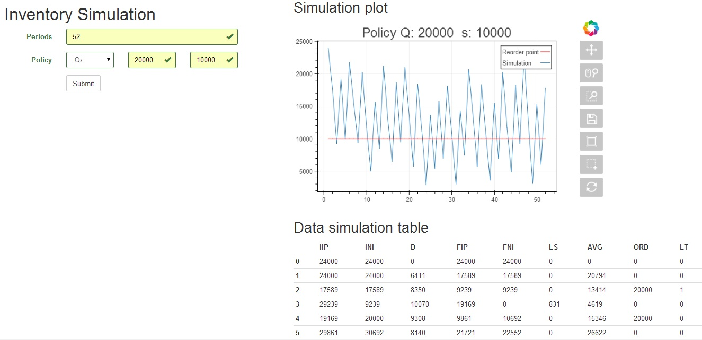

Uso Básico¶
Puedes ver el demo en:
http://sinvi-app.herokuapp.com/
O si tienes el repositorio:
$ pip install -r requirements.txt
$ python views.py runserver
* Running on http://localhost:5000/
Esto es un ejemplo de lo que debería mostrar la página:
En el campo “periods” se digitan el número de periodos que durará la simulación según la unidad de tiempo que utilices (dias, semanas, meses).
En “Policy” seleccionas la politica deseada e ingresas los argumentos. Solo hay dos políticas en el momento Qs y RS. Por ejemplo Qs, donde s se le asigna un valor de 10.000 unidades y a Q 20.000 unidades.
Presionas el botón “Submit” para iniciar la simulación. La aplicación en la parte derecha debe mostrar una gráfica de como se comporta el nivel de inventario de acuerdo a la política escogida y además mostrar los resultados de la simulación en una tabla.
Parametros del ejemplo¶
- Periodos: 52 semanas
- Política Q: 20000, s: 10000
- La demanda sigue una dist. normal con media: 8000 y desvest: 1000
- Lead time sigue una dist. triangular con min = 0 moda = 1 y max = 2.
Abreviaciones
IIP: Posición de inventario inicial
INI: Inventario neto inicial
D: Demanda
FIP: Posición de inventario final
FNI: Inventario neto final
LS: Ventas perdidas
AVG: Inventario neto promedio
ORD: Cantidad a ordenar
LT: Lead time
Anotaciones semana a semana del ejemplo¶
Sem 0: Preparación datos. Inventario inicial/final == Posición inventario inicial/final
Sem 1: Demanda 6411 unds. Se descuenta al inventario. No hay ordenes pendientes.
Sem 2: Se descuenta D a IIP y INI. FIP < 10k, se realiza un pedido de 20k que llegara en un día.
Sem 3: Se actualiza IIP con el pedido anterior. Se descuenta D respectivamente. Se pierden ventas.
Sem 4: Llega el pedido de sem 2. Se actualiza INI. FIP < 10k, orden de 20k que llegará el mismo día.
.
.
.
Sem 53: Fin simulación.